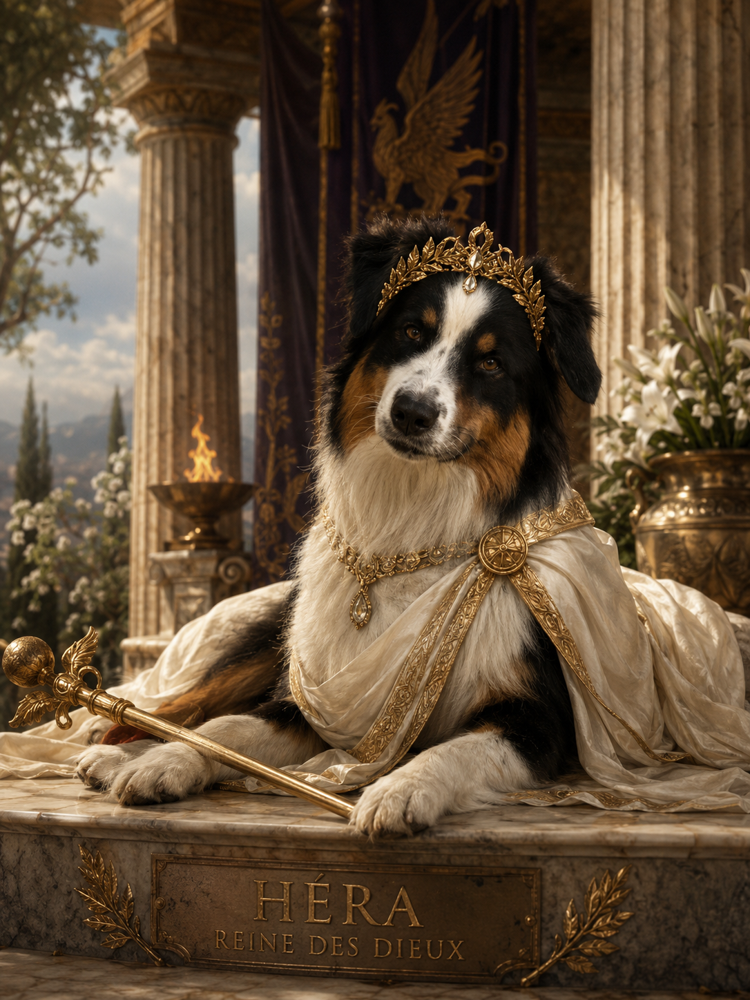
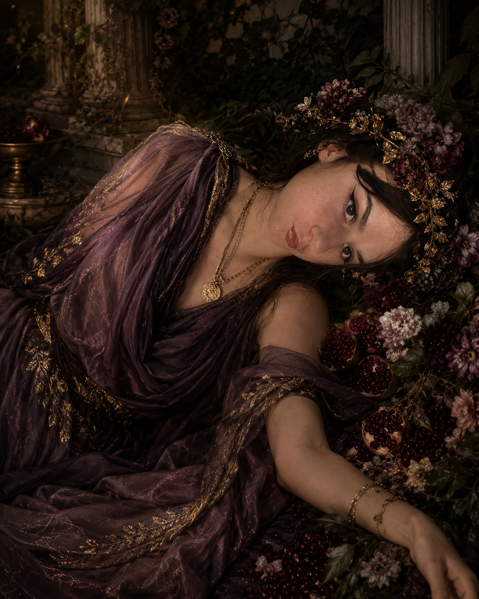

L'Iliade, l'Odyssée
et tout l'Olympe
Un petit site fait maison, plein d'anecdotes drôles et surprenantes sur la mythologie grecque — parce que tu mérites mieux qu'un simple résumé Wikipédia.
Six escales dans la mythologie grecque : la guerre de Troie, le long retour d'Ulysse, l'arbre généalogique (chaotique) des dieux, et trois portraits — Héra, Perséphone et Hadès, le grand incompris des Enfers.
Clin d'œil obligatoire : oui, la reine des dieux de l'Olympe partage son nom avec une certaine chienne très respectée. On espère qu'elle sera aussi jalouse de son territoire que l'originale (mais avec moins de vengeances dramatiques).
L'Iliade
Homère raconte quelques semaines de la dixième année du siège de Troie. Officiellement une épopée héroïque. Officieusement, un drame de couple à l'échelle planétaire.
Anecdotes qui expliquent (mal) une guerre de dix ans
Techniquement, l'Iliade ne raconte même pas toute la guerre de Troie — juste la colère d'Achille. Le cheval de bois, la pomme d'or et la mort d'Achille viennent d'autres légendes. Homère, lui, préfère filmer une engueulade de camp militaire.
Qui se bat contre qui ?
Résumé des deux camps — humains et divins, tout le monde a fini par choisir un côté.
Les Achéens (Grecs)
Venus reprendre Hélène par la force- Agamemnon
- Roi de Mycènes, chef suprême de la coalition grecque — et celui qui déclenche la colère d'Achille en lui confisquant sa captive.
- Achille
- Le meilleur guerrier grec, chef des Myrmidons. Son retrait du combat, puis son retour après la mort de Patrocle, structure tout le récit.
- Ménélas
- Roi de Sparte, mari d'Hélène. C'est son honneur bafoué qui sert officiellement de prétexte à toute la guerre.
- Ulysse
- Roi d'Ithaque, réputé pour sa ruse plus que sa force brute — futur héros de l'Odyssée.
- Ajax le Grand
- Géant increvable de l'armée grecque, deuxième meilleur combattant après Achille.
- Diomède
- Jeune roi d'Argos, si vaillant (et boosté par Athéna) qu'il ose blesser deux dieux en plein combat.
- Nestor
- Le sage conseiller, trop âgé pour se battre en première ligne, mais toujours prêt à rappeler « de mon temps... ».
- Patrocle
- Le compagnon le plus proche d'Achille. Sa mort au combat, portant l'armure de son ami, est le vrai déclic qui ramène Achille dans la guerre.
Les Troyens et leurs alliés
Défendent leur ville assiégée depuis dix ans- Priam
- Vieux roi de Troie, père d'une cinquantaine d'enfants, dont Hector et Pâris. Il ira lui-même supplier Achille de lui rendre le corps de son fils.
- Hector
- Fils aîné de Priam, véritable chef militaire de Troie — bien plus responsable et respecté que son frère Pâris. Son duel final contre Achille est le sommet du poème.
- Pâris
- Le frère qui a enlevé Hélène et déclenché toute l'affaire. Piètre combattant, sauvé plus d'une fois in extremis par Aphrodite.
- Énée
- Cousin d'Hector, protégé d'Aphrodite (sa mère divine). Il survit à la guerre et deviendra, dans la légende romaine, l'ancêtre des fondateurs de Rome.
- Sarpédon
- Roi allié de Lycie, fils de Zeus lui-même — ce qui n'empêche pas son père de le laisser mourir au combat, faute d'intervenir.
- Glaucos
- Cousin et compagnon d'armes de Sarpédon, connu pour avoir échangé son armure en or contre celle en bronze d'un ennemi grec, sans y voir un mauvais calcul.
La pomme la plus toxique de l'histoire
Tout commence par un mariage où une déesse n'est pas invitée : Éris, la Discorde. Vexée, elle balance une pomme d'or « à la plus belle ». Héra, Athéna et Aphrodite se battent pour l'attraper, comme trois collègues devant le dernier croissant en salle de pause. Résultat : la guerre de Troie.
Pâris, le pire arbitre de concours de beauté
Zeus refuse de trancher (stratège) et refile la pomme à Pâris, simple berger. Chaque déesse tente de le corrupter : pouvoir, gloire militaire, ou la plus belle femme du monde. Pâris choisit la femme — qui se trouve être déjà mariée à un roi grec. Aucune conséquence n'est envisagée à ce stade.
La bouderie d'Achille
Le déclencheur réel de l'Iliade n'est pas Hélène, mais une esclave de guerre qu'Agamemnon confisque à Achille par principe. Vexé, le meilleur guerrier grec... arrête de se battre et boude sous sa tente pendant une bonne partie du poème. Des milliers de morts plus tard, il s'y remet.
Pâris se fait littéralement téléporter
En plein duel contre Ménélas, Pâris est sur le point de perdre. Aphrodite l'enveloppe alors d'un nuage et le dépose... dans sa chambre à coucher, sain et sauf. Le combat s'arrête net, personne ne sait où est passé le fautif, et Hélène doit gérer la situation seule.
Diomède blesse deux dieux dans la même journée
Le héros grec Diomède, boosté par Athéna, se met à charger n'importe qui sur le champ de bataille — y compris Aphrodite, qu'il blesse à la main, puis Arès, le dieu de la guerre en personne, qu'il transperce au ventre. Arès repart en hurlant vers l'Olympe se plaindre à Zeus.
Le point faible le plus célèbre... n'est pas dans l'Iliade
Contrairement à la légende, Homère ne mentionne jamais le fameux talon. Cette histoire (Achille trempé dans le Styx par sa mère, sauf au talon qui la tenait) apparaît bien plus tard, chez des auteurs romains. L'Iliade s'arrête d'ailleurs avant la mort d'Achille.
Thersite, le râleur du camp
Un simple soldat, laid et bavard, ose critiquer publiquement Agamemnon devant toute l'armée. Ulysse le frappe avec son sceptre pour le faire taire, sous les rires généraux. Moralité antique : la satire politique se termine rarement bien.
Zeus interdit aux dieux d'intervenir... puis intervient
En plein conseil de l'Olympe, Zeus ordonne solennellement à tous les dieux de rester neutres. Quelques chants plus tard, la moitié du panthéon se bat dans la plaine de Troie, et Zeus lui-même fait pencher la balance en pesant les destins d'Achille et Hector sur une balance d'or.
L'Odyssée
Ulysse met dix ans à rentrer chez lui après une guerre qui en a duré dix. À sa décharge, il croise à peu près tous les monstres et pièges disponibles en Méditerranée.
Les étapes (vraiment trop nombreuses) du voyage
Un vrai road-trip mythologique, dans l'ordre — de la ruse du cheval de bois jusqu'au retour à Ithaque, vingt ans après le départ.
-
1
Le départ de Troie
Après la victoire grecque, Ulysse quitte Troie avec ses hommes pour rentrer à Ithaque. Mais dès les premiers jours, tout part de travers : il va provoquer des dieux, perdre des hommes, et être sans cesse retardé. Un trajet censé durer quelques semaines va finalement en prendre dix ans.
-
2
Les Cicones, ou la leçon d'humilité n°1
Première escale, première bêtise : Ulysse et ses hommes pillent la ville d'Ismaros chez les Cicones, puis s'attardent trop longtemps à fêter ça au lieu de repartir vite. Les Cicones contre-attaquent et Ulysse perd des hommes. Moralité immédiate : l'orgueil et l'imprudence coûtent cher.
-
3
Les Lotophages, ou le danger du confort
Chez les Lotophages, un peuple qui se nourrit du fruit du lotus, certains compagnons d'Ulysse goûtent ce fruit qui efface toute envie de rentrer chez soi. Il doit littéralement les traîner de force jusqu'aux navires. Une idée forte s'installe : le danger n'est pas toujours violent, parfois c'est juste l'envie d'abandonner.
-
4
« Personne » contre le Cyclope
Dans la grotte du Cyclope Polyphème, fils de Poséidon, Ulysse se présente sous le nom « Personne ». Une fois le monstre enivré puis aveuglé d'un pieu, il hurle à ses voisins que « Personne » l'attaque — logiquement, personne ne vient l'aider. Ulysse s'échappe accroché sous les moutons du Cyclope, mais commet une erreur d'orgueil : il révèle son vrai nom en partant. Polyphème demande alors à son père Poséidon de le punir. C'est cette rancune divine qui explique la longueur du retour.
-
5
L'outre des vents ouverte trop tôt
Éole, maître des vents, offre à Ulysse un sac contenant tous les vents contraires, ce qui lui permet de presque rentrer chez lui — Ithaque est en vue. Pendant qu'il dort, ses hommes, persuadés que le sac contient un trésor, l'ouvrent en cachette. Tous les vents s'échappent et les repoussent loin d'Ithaque, juste avant l'arrivée.
-
6
Les Lestrygons, des géants sans pitié
Chez les Lestrygons, des géants cannibales, la flotte d'Ulysse est presque entièrement détruite. Un seul navire survit : le sien. À partir de là, il n'a plus aucune marge d'erreur.
-
7
Circé transforme l'équipage en cochons
La magicienne Circé change plusieurs hommes d'Ulysse en cochons. Protégé par une plante magique offerte par Hermès, il résiste à son sortilège. Circé finit par l'accueillir, et il reste chez elle un an, avant qu'elle ne lui ordonne de descendre aux Enfers consulter le devin Tirésias.
-
8
La descente aux Enfers
Aux Enfers, Ulysse croise plusieurs âmes, dont celle de sa propre mère, morte pendant son absence — un moment très dur pour lui. Le devin Tirésias lui révèle les dangers à venir, et surtout une consigne précise : ne jamais toucher aux troupeaux sacrés du dieu Hélios.
-
9
Le chant des Sirènes
Pour passer devant les Sirènes, dont le chant attire les marins vers la mort, Ulysse bouche les oreilles de ses hommes avec de la cire, mais veut lui-même entendre le chant. Il se fait attacher au mât avec l'ordre formel de ne pas être détaché, même s'il supplie. Il devient fou d'envie de les rejoindre — ses hommes tiennent bon, et tout le monde survit.
-
10
Charybde et Scylla, le moindre mal
Entre le gouffre marin Charybde, qui aspire les navires, et Scylla, monstre à plusieurs têtes qui dévore les marins, Ulysse doit choisir. Passer trop près de Charybde détruirait tout le navire ; passer près de Scylla ne coûtera que quelques hommes. Il choisit Scylla : six hommes meurent, mais le navire survit — un chef doit parfois arbitrer entre catastrophe totale et perte limitée.
-
11
Les troupeaux sacrés d'Hélios
Bloqués par les vents sur l'île du dieu Soleil et à court de nourriture, les hommes d'Ulysse désobéissent pendant son sommeil et mangent les bœufs sacrés d'Hélios. Les dieux punissent immédiatement cette faute : Zeus détruit le navire d'un coup de foudre. Tous les compagnons meurent. Ulysse est l'unique survivant.
-
12
Calypso et l'offre d'immortalité refusée
Échoué sur l'île de la nymphe Calypso, Ulysse y est retenu plusieurs années. Amoureuse, elle lui propose même l'immortalité s'il reste avec elle pour toujours. Il refuse : il veut retrouver Pénélope et Ithaque, quitte à rester mortel. Les dieux finissent par ordonner à Calypso de le laisser partir.
-
13
Les Phéaciens, la dernière étape avant le retour
Reparti sur un simple radeau, Ulysse essuie une nouvelle tempête envoyée par Poséidon avant d'échouer chez les Phéaciens, un peuple accueillant. Il leur raconte alors toute son odyssée depuis Troie — et c'est grâce à eux qu'il rejoint enfin Ithaque.
-
14
Retour à Ithaque, déguisé en mendiant
De retour chez lui, Ulysse est transformé par Athéna en vieux mendiant méconnaissable, le temps d'observer la situation avant d'agir. Au palais, les prétendants au trône occupent les lieux, dévorent ses richesses et pressent Pénélope de choisir un nouveau mari. Elle, de son côté, gagne du temps grâce à un linceul qu'elle tisse le jour et défait chaque nuit en secret.
-
15
Télémaque retrouve son père
Télémaque, le fils d'Ulysse, revient lui aussi à Ithaque après être parti chercher des nouvelles de son père. Ulysse se fait alors reconnaître de lui, et les deux préparent ensemble leur vengeance contre les prétendants.
-
16
L'épreuve de l'arc
Pénélope organise un concours : celui qui parviendra à bander l'arc d'Ulysse et à tirer une flèche à travers douze haches alignées pourra l'épouser. Tous les prétendants échouent. Le mendiant qu'est censé être Ulysse demande à essayer, sous les moqueries générales — et réussit du premier coup. Le piège se referme.
-
17
Le massacre des prétendants
Ulysse révèle enfin sa véritable identité et, avec Télémaque et quelques serviteurs fidèles, extermine les prétendants. Une violence radicale, mais justifiée dans la logique grecque : ils ont violé les règles sacrées de l'hospitalité et tenté de voler son royaume.
-
18
Le test du lit conjugal
Pénélope ne se précipite pas pour le reconnaître : elle veut être sûre. Elle le teste avec le secret de leur lit, construit autour d'un olivier enraciné dans le sol et donc impossible à déplacer. Quand Ulysse décrit ce détail que lui seul peut connaître, Pénélope comprend enfin que c'est vraiment lui.
-
19
Le retour à l'ordre
Après vingt ans d'absence au total — dix ans de guerre à Troie, dix ans de voyage —, Ulysse retrouve sa place de roi, de mari et de père, la paix étant rétablie à Ithaque avec l'aide d'Athéna.
Au total, le trajet Troie–Ithaque, qui devrait prendre quelques semaines en bateau, en prend dix ans. Aujourd'hui on appellerait ça un problème d'itinéraire GPS.
L'arbre généalogique des dieux
Entre cannibalisme familial, mariages entre frère et sœur et naissances toujours plus improbables, voici l'arbre le plus dysfonctionnel de la mythologie.
De Chaos à l'Olympe
Petit résumé visuel — dans l'ordre chronologique, du vide originel jusqu'à la génération qui préside vraiment le mont Olympe.
Chaque génération renverse la précédente
Ouranos est castré par son fils Cronos. Cronos, pour éviter le même sort, avale ses enfants à la naissance — sauf Zeus, caché par Rhéa, qui finit par le forcer à tout régurgiter. Trois générations, trois coups d'État familiaux.
Athéna sort tout armée du crâne de Zeus
Zeus avale sa compagne Métis enceinte, par peur d'une prophétie. Il souffre ensuite d'un mal de crâne si violent qu'Héphaïstos lui fend le front à la hache. Athéna en jaillit, adulte, casquée et armée. Aucune sage-femme n'a été impliquée.
Dionysos, né deux fois
Sa mère mortelle meurt foudroyée avant terme (piège tendu par une Héra jalouse). Zeus récupère le fœtus et le coud dans sa propre cuisse jusqu'au terme. D'où son surnom : « né deux fois ».
Le couple royal est un couple de frère et sœur
Zeus et Héra, comme Cronos et Rhéa avant eux, sont frère et sœur. Personne sur l'Olympe ne trouve ça bizarre — c'est même la norme chez les dieux primordiaux.
Héra
Reine des dieux, déesse du mariage et de la famille — et la plus grande spécialiste antique de la vengeance patiente et méthodique.

Portrait d'une reine qu'on ne trahit pas deux fois
Fille de Cronos et Rhéa, sœur et épouse de Zeus, Héra règne sur l'Olympe. Son mari étant chroniquement infidèle, une grande partie de sa mythologie consiste à punir non pas lui, mais ses conquêtes et leurs enfants.
Le paon et la vache
Héra est associée au paon, dont les motifs sur les plumes seraient les cent yeux de son garde Argos, et à la vache — sacrée à ses yeux au point qu'elle porte l'épithète « aux yeux de bœuf » chez Homère. Un compliment, à l'époque.
Io transformée en vache
Zeus change une de ses conquêtes, Io, en génisse pour la cacher d'Héra. Sans être dupe une seconde, Héra demande la vache en cadeau, puis la fait surveiller par Argos aux cent yeux, avant de l'envoyer se faire harceler par un taon à travers toute la Méditerranée.
Héraclès, la victime la plus célèbre
Le nom « Héraclès » signifie littéralement « gloire d'Héra » — ironie amère, puisqu'elle passe une bonne partie de sa vie à s'acharner sur lui, fils illégitime de Zeus. Elle lui envoie même une crise de folie meurtrière, à l'origine de ses fameux douze travaux.
La création de la Voie lactée
Selon une version du mythe, Zeus fait téter le bébé Héraclès à une Héra endormie pour le rendre immortel. Elle se réveille, le repousse brusquement — et le lait giclé dans le ciel forme la Voie lactée. En grec, « galaxie » vient d'ailleurs du mot pour... lait.
Héphaïstos rejeté à la naissance
Pour rivaliser avec Zeus qui a enfanté Athéna seul, Héra tente la même chose et donne naissance à Héphaïstos sans père. Déçue par son apparence, elle le jette du haut de l'Olympe. Devenu forgeron des dieux, il se vengera plus tard en lui envoyant un trône piégé, impossible à quitter sans son aide.
Juno, juin, et un peu de génétique du calendrier
Chez les Romains, Héra devient Junon (Juno) — d'où le mois de juin. Une déesse du mariage qui finit par donner son nom au mois le plus populaire pour se marier : la boucle est bouclée.
Donc oui, Lola : ta chienne porte le nom de la reine de l'Olympe, protectrice jalouse de son territoire et de sa famille. Difficile de trouver plus approprié pour une bonne gardienne.
Perséphone
Fille de Zeus et Déméter, reine des Enfers malgré elle — et responsable, à cause de six petits grains de fruit, de l'existence de l'hiver.

De Coré à reine des Enfers
Avant son enlèvement, elle s'appelle Coré, « la jeune fille ». Après, on ne l'appelle plus jamais ainsi : le changement de nom marque, à lui seul, le passage à un tout autre statut.
Une fleur trop parfaite pour être honnête
Coré cueille des fleurs des champs quand un narcisse extraordinaire attire son attention — planté là par Gaïa, en service commandé pour Hadès. Au moment où elle le cueille, le sol s'ouvre et Hadès surgit sur son char pour l'emmener sous terre.
Une mère qui met la planète en pause
Folle d'inquiétude, Déméter, déesse des moissons, cesse de faire pousser quoi que ce soit sur Terre. Les récoltes s'arrêtent, la famine menace l'humanité entière — jusqu'à ce que Zeus, sous la pression, ordonne le retour de sa fille.
La règle des grains de grenade
Il existe une règle simple aux Enfers : quiconque y mange en devient captif. Avant son départ, Hadès offre à Perséphone quelques grains de grenade. Elle en mange six — sans savoir (ou sans se douter) que ce détail va tout changer.
-
6
Six grains, six mois
Parce qu'elle a mangé six grains de grenade, Perséphone est condamnée à passer six mois par an aux Enfers auprès d'Hadès, et six mois sur Terre auprès de sa mère. Quand elle remonte, Déméter, ravie, fait fleurir le printemps et l'été. Quand elle redescend, la Terre replonge dans l'automne et l'hiver.
De « la jeune fille » à reine des Enfers
Une fois installée sous terre, Perséphone ne reste pas une simple otage : elle devient une véritable reine des Enfers, siégeant aux côtés d'Hadès et intervenant dans plusieurs mythes en position de pouvoir, notamment auprès d'Orphée.
Hécate, la compagne qui ne l'a jamais lâchée
Seule déesse à avoir entendu les cris de Coré lors de l'enlèvement, Hécate, déesse de la magie et des carrefours, devient sa proche compagne aux Enfers — une des rares amitiés durables de toute la mythologie grecque.
Hadès
Le dieu le plus mal compris de l'Olympe — enfin, techniquement, il ne vit même pas sur l'Olympe. Administrateur rigoureux des Enfers, pas incarnation du mal : c'est ça, le vrai scandale mythologique.
Portrait détaillé du souverain des Enfers
Frère de Zeus et Poséidon, Hadès reçoit les Enfers par tirage au sort après la victoire sur les Titans. Contrairement à sa réputation, il n'est ni maléfique ni cruel — juste extrêmement à cheval sur le règlement.
Un royaume gagné à la courte paille
Après la victoire sur les Titans, les trois frères Zeus, Poséidon et Hadès se partagent l'univers en tirant au sort. Zeus obtient le Ciel, Poséidon la Mer, et Hadès hérite des Enfers — le lot que personne ne voulait vraiment.
Administrateur, pas incarnation du mal
Contrairement au diable des traditions chrétiennes, Hadès ne punit pas les vivants ni ne cherche à corrompre qui que ce soit. Il gère un territoire et fait respecter des règles fixes. Le vrai « méchant » de la théogonie grecque, c'est plutôt Cronos, qui mange ses propres enfants.
Cerbère, le videur à trois têtes
Le chien Cerbère garde l'entrée des Enfers avec une règle simple : les âmes peuvent entrer librement, mais aucune ne doit ressortir. Un des rares héros à réussir à le maîtriser brièvement est Héraclès, lors de son douzième et dernier travail.
Le casque d'invisibilité
Les Cyclopes offrent à Hadès un casque qui rend invisible, qu'il prête occasionnellement à des héros comme Persée. Malgré cet objet redoutable, Hadès lui-même quitte très rarement son royaume — sa seule incursion notable à la surface est justement l'enlèvement de Perséphone.
Trois juges, un passeur, un fleuve-serment
Minos, Rhadamanthe et Éaque jugent chaque âme à son arrivée. Charon fait traverser le Styx aux défunts contre une pièce placée sous la langue du mort — d'où la tradition antique d'enterrer les morts avec une monnaie. Le Styx lui-même sert de serment ultime : même les dieux qui le violent sont punis.
Sisyphe, Tantale et Ixion
Sisyphe pousse éternellement un rocher qui redescend juste avant le sommet, pour avoir voulu tromper la mort. Tantale, affamé et assoiffé, voit nourriture et eau reculer dès qu'il approche. Ixion tourne sans fin sur une roue enflammée. Trois punitions sur-mesure, dignes d'un juriste tatillon.
Orphée, Eurydice et une seule condition
Ému par la musique d'Orphée venu réclamer sa femme morte, Hadès accepte de la laisser repartir — à une seule condition : ne pas se retourner avant d'être sorti des Enfers. Orphée craque à quelques mètres de la sortie. Un contrat clair, respecté à la lettre par Hadès, rompu par l'humain.
Un mariage plus stable qu'il n'y paraît
Malgré des débuts contestables (l'enlèvement de Perséphone), Hadès est l'un des rares dieux grecs à ne jamais être infidèle. Contrairement à Zeus, sa mythologie ne contient aucune liaison extraconjugale connue — un détail que la plupart des lecteurs oublient.
En résumé : le vrai scandale, ce n'est pas Hadès — c'est sa réputation.
La carte du monde homérique
Les lieux réels de la guerre de Troie, et les escales — souvent légendaires — du voyage d'Ulysse à travers toute la Méditerranée.
Troie, Ithaque, et tout ce qu'il y a entre les deux
Contrairement aux lieux de l'Iliade — Troie, Mycènes, Sparte — bien identifiés par l'archéologie, la plupart des escales de l'Odyssée n'ont jamais été localisées avec certitude. Les emplacements ci-dessous suivent les hypothèses traditionnelles les plus courantes, proposées depuis l'Antiquité : à prendre comme une invitation au voyage, pas comme un relevé GPS.
Clique sur un point pour lire l'anecdote qui va avec. La ligne pointillée suit l'itinéraire d'Ulysse, dans l'ordre du récit.